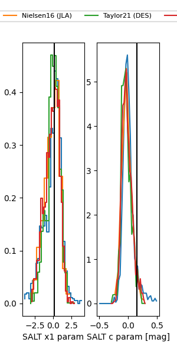

FINK: ZTF25ablgfxf
Lasair: ZTF25ablgfxf
ALeRCE: ZTF25ablgfxf
TNS: 2025vdq
YSE: 2025vdq
ZTF25ablgfxf (ztf,fink)
2025vdq (tns,yse)
equatorial (ra, dec) = (68.2593,-10.10408)
galactic (l, b) = (205.9824,-35.27730)

last atlasc=16.97, atlaso=17.68, ztfg=17.67, ztfr=17.46
2 atlasc, 11 atlaso, 7 ztfg, 5 ztfr detections